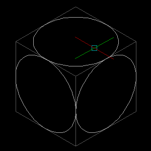

Isometric Polygon
This page is delivered for consistency purposes only, as part of the LeeMac sample module of DynALisp, which shows how DynALisp turns existing AutoLISP programs into a module. The program and its description are the work of Lee Mac, who keeps all the credit for them. The original page, with the latest version, is on Lee Mac's website: https://lee-mac.com/isopoly.html
| Function Syntax | LM-IsometricPolygon – original syntax: isopoly (see aliases) |
| Current Version | 1.0 |
| Compatible with AutoCAD for Mac? | Yes |
| Compatible with AutoCAD LT? | Yes |
| Original Page | lee-mac.com/isopoly.html |
Program Description
This program enables the user to construct a regular polygon projected in the active isometric plane.
Upon calling the program with the command syntax isopoly at the AutoCAD command-line, the user is first prompted to specify the number of sides for the polygon (with the last entered value available as a default option, and with an initial default of 6 sides if the program has not yet been used in the current drawing session). The user is then prompted to specify the center of the polygon and the radius of the circle (or rather ellipse when projected) circumscribing the polygon vertices.
Following valid responses to these prompts, the program will construct the specified polygon in either the active isometric plane (if the Snap type is set to Isometric Snap), or the WCS plane (if the Snap type is set to Rectangular Snap). With the Snap Type set to Rectangular Snap, the result will be identical to the standard polygon command.
If the Snap type is set to Isometric Snap, the resultant polygon will be the equivalent of constructing an Isocircle (an option of the Ellipse command, available when the Snap Type is set to Isometric), and then using the Divide command to generate points along the circumference of the ellipse which may then be joined to form the projected polygon.
Example of Usage

For those who don't know, the active isometric plane (or isoplane) may be toggled between left, right, and top using the F5 key when the Snap type is set to Isometric Snap (i.e. when the SNAPSTYL System Variable is set to 1).
As a bonus program, the following code will toggle the Snap type between rectangular and isometric:
(defun c:ss ( ) (setvar 'snapstyl (- 1 (getvar 'snapstyl))) (princ) )
Bundled program notes
;;------------------=={ Isometric Polygon }==-----------------;;
;; ;;
;; Enables the user to construct a regular polygon projected ;;
;; in the active isometric plane. ;;
;;------------------------------------------------------------;;
;; Author: Lee Mac, Copyright © 2012 - www.lee-mac.com ;;
;;------------------------------------------------------------;;
Command Names And Aliases
As in every DynALisp module, each program of this sample module has one main command, named LM-*, and the original command names of Lee Mac's page are kept as its aliases: they run the same command, and can be added, renamed or removed in Dyl-Suite (saved in Resources\Aliases.csv).
| Command | Aliases | Name |
|---|---|---|
| LM-IsometricPolygon | ISOPOLY | Isometric Polygon |